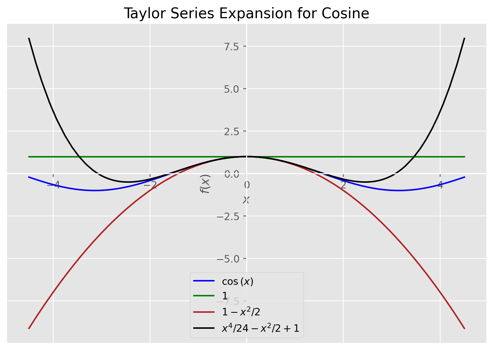

from sympy import series, Symbol
from sympy.functions import sin, cos, exp
from sympy.plotting import plot
from matplotlib import pyplot as plt
plt.style.use("ggplot")Introduction
In this blog, I want to review famous Taylor Series Expansion and its special case Maclaurin Series Expansion. According to wikipedia, the aim of Taylor Series Expansion (TSE) is to represent a function as an infinite sum of terms that are derived from the values of that function’s derivatives, which in turn are evaluated at some predefined single point. In other words, by using TSE, we try to represent some given function as an infinite sum of its derivatives and these derivatives are evaluated at some single point which we can choose. Before diving into mechanics of TSE and its special case Maclaurin Series Expansion (MSE), it’s worth to know some history behind these guys. Back in the 17th century the concept of expansion first was introduced by mathematician James Gregory, but in 1715 the notion of function expansion was formally introduced by Brook Taylor.
A one-dimensional Taylor series is an expansion of a real function \(\mathbb F(x)\) about a point \(x=a\) is given by:
\[ \mathbb F(x) \approx \mathbb F(a) + \mathbb F^{'}(a)\cdot(x - a) + \frac{1}{2!}\cdot\mathbb F^{''}(a)\cdot(x - a)^{2} + \frac{1}{3!}\cdot\mathbb F^{3}(a)\cdot(x - a)^{3} + \cdots + \frac{1}{n!}\cdot\mathbb F^{n}(a)\cdot(x - a)^{n} \]
where, \(n!\) denotes the factorial of \(n\) and \(\mathbb F^{n}(a)\) denotes nth derivative of \(\mathbb F\) evaluated at point \(a\). Every term on the right hand side denotes the order of Taylor expansion. For instance, \(\mathbb F(a)\) is zeroth-order expansion and \(\mathbb F^{'}(a)\cdot(x - a)\) is the first-order expansion. The above representation is called open-form representation of an expansion.
We can write this expansion in more compact notation in the following way:
\[ \sum_{n = 0}^{\infty} = \frac{\mathbb F^{n}(a)}{n!}\cdot(x - a)^n \]
This is the closed-form representation of an expansion.
To see the intuition, let review some example. I’m interested what is Taylor expansion of order 3 of \(cos(x)\) at \(x = a\). To follow the above definition we have:
\[ \mathbb F(x) = cos(x) \]
\[ cos(x) \approx cos(a) - sin(a)\cdot(x - a) - \frac{1}{2}\cdot cos(a)\cdot (x - a)^2 + \frac{1}{6}\cdot sin(a)\cdot(x - a)^3 \]
You ask, what is \(a\) and how can we choose it? \(a\) is the point where we want to have \(cosine\) approximation and it can be any number from \(-\infty\) to \(+\infty\). Note that, this is not the case for other functions. We are restricted to choose \(a\) from domain of a given function.
Now, let do Taylor approximation for \(sin(x)\) at \(x = a\)
\[ \mathbb F(x) = sin(x) \]
\[ sin(x) \approx sin(a) + cos(a)\cdot(x - a) + \frac{1}{2}\cdot sin(a)\cdot (x - a)^2 - \frac{1}{6}\cdot cos(a)\cdot(x - a)^3 \]
We can go further and do Taylor series expansion for exponent \(e^{x}\) at \(x = a\) is
\[ \mathbb F(x) = e^{x} \]
\[ e^{x} \approx e^{a} + e^{a}\cdot(x - a) + \frac{1}{2}\cdot e^{a}\cdot (x - a)^2 + \frac{1}{6}\cdot e^{a}\cdot(x - a)^3 \]
As we have three functions approximations, let choose the value for \(a\) and set it to zero and see what we will have.
For \(cos(x)\) where \(x = a = 0\) we have:
\[ cos(x) = 1 - \frac{1}{2}x^2 \]
for \(sin(x)\) at \(x = a = 0\) we have:
\[ sin(x) = x - \frac{1}{6}x^3 \]
For \(e^{x}\) where \(x = a = 0\) we have:
\[ e^{x} = 1 + x + \frac{1}{2}x^2 + \frac{1}{6}x^3 \]
This kind of expansion is known as Maclaurin series expansion, in other words when approximation point is zero we call it Maclaurin expansion.
Calculating third order approximation for these functions by hand does not seem too hard, but for higher order it’s tedious. To solve this problem we can use Python, namely Sympy if we want to have a symbolic approximation, or Numpy/Scipy to have a numeric approximation. Not to be confused with numeric approximation and approximation point. At \(a = 0\) for function \(\mathbb F(x) = e^{x}\) we had Taylor approximation \(e^{x} = 1 + x + \frac{1}{2}x^2 + \frac{1}{6}x^3\). If we evaluate this expression at, say \(x = 1\) we have function output. In this setup,
\[ \mathbb F(x) = e^{x} \approx 1 + x + \frac{1}{2}x^2 + \frac{1}{6}x^3\mid_{x=1} \]
and evaluated at \(x = 1\) we have \(\mathbb F(1) = e^{1} = 2.71828182 \approx 2.66666666\), which is close to the real output.
Now let visualize these functions and their Taylor approximations at different points with a different order of expansion. Before visualizing results it’s good to have a function which will do symbolic Taylor expansion for higher orders for one variable functions. For multi-variable functions, it’s up to you.
Practical Examples
# Define symbol
x = Symbol("x")
def taylor(function, x0, n):
"""
Do Taylor Series Expansion for a given real valued function.
Args:
function: function to approximate
x0: point where to approximate
n: order of approximation
Returns:
A list of the Taylor series expansion of the function
"""
return function.series(x, x0, n).removeO()
def plot_expansion(function, expansions, points, title):
"""
Plots a function and its Taylor Series Expansion
Args:
function: Original function
expansions: List of Taylor Series Expansion for that function
points: List of points to plot
title: Title of the plot
"""
p = plot(function, *expansions, points, legend=True, show=False)
p[0].line_color = "blue"
p[1].line_color = "green"
p[2].line_color = "firebrick"
p[3].line_color = "black"
p.title = title
p.show()While defining “taylor” function, in return statement I used “.removeO()” method. This method is used in series expansion to remove \(\mathit O(x^{n})\) term, which is Landau order term at \(x = 0\) and not to be confused with big \(\mathit O\) notation used in computer science, which generally represents the Landau order term at \(x = \infty\).
We can do \(sin(x)\), \(cos(x)\), and \(e(x)\) expansion by using Sympy.
print("sin(x) =", taylor(sin(x), 0, 4))
print("cos(x) =", taylor(cos(x), 0, 4))
print("e(x) =", taylor(exp(x), 0, 4))sin(x) = -x**3/6 + x
cos(x) = 1 - x**2/2
e(x) = x**3/6 + x**2/2 + x + 1That’s not all. We can evaluate these functions at any point. For instance as we did above for \(x = 1\)
print("sin(1) =", taylor(sin(x), 0, 4).subs(x, 1))
print("cos(1) =", taylor(cos(x), 0, 4).subs(x, 1))
print("e(1) =", taylor(exp(x), 0, 4).subs(x, 1))sin(1) = 5/6
cos(1) = 1/2
e(1) = 8/3As we have all the necessary tools to visualize the results, let do it.
Sine Expansion
# This will plot sine and its Taylor approximations
plot_expansion(
sin(x),
[taylor(sin(x), 0, 1), taylor(sin(x), 0, 3), taylor(sin(x), 0, 5)],
(x, -3.5, 3.5),
"Taylor Series Expansion for Sine",
)Cosine Expansion
# This will plot cosine and its Taylor approximations
plot_expansion(
cos(x),
[taylor(cos(x), 0, 2), taylor(cos(x), 0, 4), taylor(cos(x), 0, 6)],
(x, -4.5, 4.5),
"Taylor Series Expansion for Cosine",
)
Exponential Expansion
# This will plot exponent and its Taylor approximations
plot_expansion(
exp(x),
[taylor(exp(x), 0, 1), taylor(exp(x), 0, 2), taylor(exp(x), 0, 3)],
(x, -2, 2),
"Taylor Series Expansion for Exponent",
)Conclusion
To conclude, in this post we saw how the Taylor series expansion works and coded it in Python. Taylor series expansion while approximating a function introduces approximation error. The magnitude of error depends on the approximation order. If we increase the order of approximation, the error term will decrease, or we can set the tolerance level for error in advance. In other words, the error term in approximation can be regarded as \(N^{th}\) order Remainder term.
For \(\mathbb F(x)\) at \(x = x_{0} = a\) the remainder term is defined as:
\[ R_{n}(x) = \mathbb F(x) - P_{n}(x) \]
Where, \(P_{n}(x)\) is the \(N^{th}\) order Taylor polynomial for \(\mathbb F(x)\) at \(x = x_{0} = a\). So,
\[ \mathbb F(x) = P_{n}(x) + R_{n}(x) \]
You may wonder why you need Taylor expansion, but it’s very important concept in mathematics and one of mathematical beauty, Euler’s Identity is derived from Taylor series expansion of \(cos(x)\), \(sin(x)\), and \(e(x)\). The derivation of Euler’s Identity deserves separate post, but if you want to see the derivation, you can take a look at Khan Academy. Moreover, some training algorithms for neural networks, such as Steepest Descent, Newton’s method, and Conjugate Gradient uses first or second order Taylor series expansion to minimize performance index.